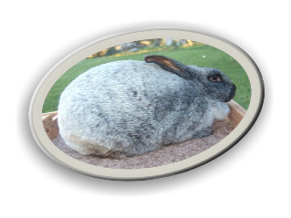
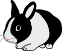
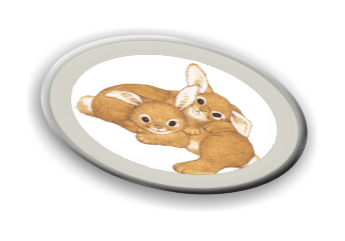

Facts
Rabbits have fluffy, short tails. They have whiskers that help them feel. Baby rabbits drink milk from their mother. Animals that drink milk from their mother are called mammals. There are about 30 different species of rabbits.
They can be the size of a cat or as big as a small child. Some rabbit species of rabbits are about 8 inches and weigh less than 1 pound. Some other species of rabbits can grow to 20 inches and close to 10 pounds.
Rabbits are herbivores. This means that they have a plant-based diet and don't ever eat meat. They are vegetarians. During warm months, rabbits will nibble on lettuce, herbs, peas, grasses, clovers and greens. During cold months like winter, they eat twigs, buds and bark.
While originally from Europe and Africa, rabbits now call many places home. Wild rabbits could be found in woods, forests, meadows and grass lands.

Meadow
Forests
Grassland

